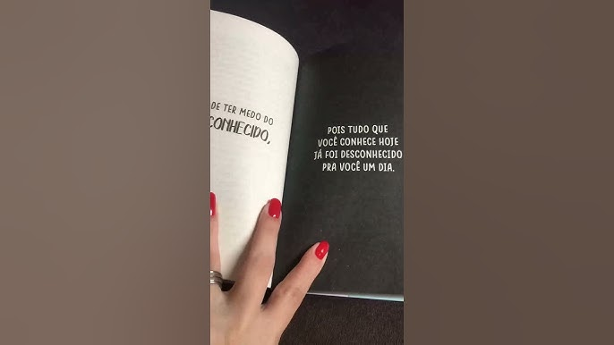

CCM. Luiz Augusto Morais rego
Esther Fernanda Emanuela Jacobs Tureta N9
Livro: A vida não é uma linha reta
Autora do best-seller Você acredita mesmo em amor à primeira vista? Às vezes a vida vem e ignora todos os nossos planos, bagunça tudo e nos tira completamente de órbita. Isso pode parecer muito assustador em um primeiro momento, mas não podemos nos esquecer de que, por mais que a gente queira, não estamos no controle de tudo, de que a vida não é uma linha reta. Ela é uma estrada cheia de curvas, com novas rotas, alguns atalhos e ruas sem saída. E o que podemos fazer? Parar, respirar e analisar! Tudo bem se por um tempo você se sentir perdido e sem saída, mas em algum momento você vai revisitar os seus sonhos, mudar alguns, criar novos, antecipar ou adiar outros, e pronto: você já tem um novo plano. Muitas vezes o destino nos guarda algo que nem imaginávamos algo ainda melhor do que estava nas nossas metas. Basta se abrir para esses novos caminhos, não ter medo de seguir as curvas da vida, encarar as encruzilhadas e, quem sabe, chegar a um destino ainda mais surpreendente. Fabi Santina apresenta neste novo livro pensamentos, reflexões e sentimentos que vão se costurando, como em uma colcha de retalhos, em textos inspiradores, escritos com o olhar de quem acredita que é possível sempre trilhar um novo caminho.
